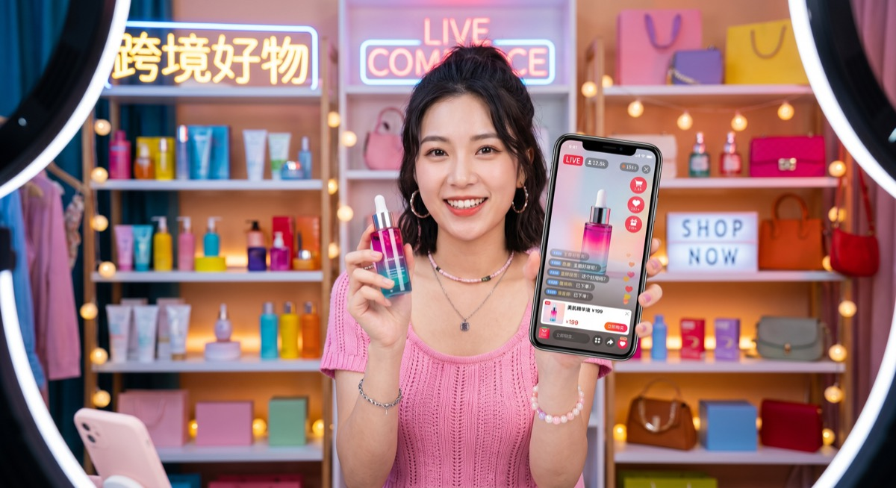

スマートフォンの普及とグローバルな物流網の整備により、国境を越えてオンラインで商品を売買する「越境EC」の市場規模は、世界中で爆発的な成長を続けています。これからのビジネスにおいて、国内市場だけでなく海外市場の動向を把握することは必要不可欠です。
本記事では、経済産業省の調査データや最新の市場レポートに基づき、2026年における世界の越境EC市場規模の現状と今後の予測、そして特に重要な「日本・中国・アメリカ」の3大市場の動向を詳しく解説します。
拡大し続ける世界の越境EC市場規模
世界の越境EC市場は、過去数年間にわたり二桁成長を記録し続けており、その勢いは2026年現在もとどまることを知りません。最新の予測レポートによれば、世界の越境EC市場規模は今後数年間で数兆ドル規模にまで膨れ上がると推計されています。
この驚異的な成長を牽引している主な要因は以下の3つです。
- 決済インフラのグローバル化：クレジットカードに加え、現地のモバイル決済やデジタルウォレットが国境を越えてシームレスに利用可能になったこと。
- SNSによる国境のない情報伝達：TikTok、Instagram、小紅書（RED）などのSNSを通じて、海外のトレンドや商品情報が瞬時に世界中に拡散されるようになったこと。
- 物流の高速化と低コスト化：国際配送サービスの最適化により、以前よりも安く、早く、安全に商品を海外へ届けることが可能になったこと。
世界最大の市場「中国」の越境EC動向と特徴
世界の越境EC市場において、圧倒的な規模と影響力を誇るのが中国市場です。中国の消費者は、海外の高品質な商品、特に安全性やブランド力が担保された商品を強く求める傾向があります。
中国市場の主な特徴
中国の越境EC市場を語る上で欠かせないのが「Tmall Global（天猫国際）」や「JD Worldwide（京東全球購）」といった巨大プラットフォームの存在です。中国の消費者はこれらのプラットフォームを通じて、日本の化粧品、ベビー用品、健康食品などを大量に購入しています。
また、近年の大きなトレンドとして「ライブコマース（ライブ配信販売）」があります。インフルエンサー（KOL）やブランド担当者がSNS上でライブ配信を行い、リアルタイムで視聴者とコミュニケーションを取りながら商品を販売する手法は、今や中国越境ECにおいて最も強力な販売チャネルの一つとなっています。

越境EC大国「アメリカ」の市場規模と特徴
中国に次ぐ世界第2位の越境EC市場規模を持つのがアメリカです。アメリカの越境EC市場は、中国とはまた異なる独自の特徴を持っています。
アメリカ市場の主な特徴
アメリカの消費者は非常に実用主義であり、国内で手に入らない独自性の高い商品や、デザイン性に優れたアパレル、趣味のアイテムなどを海外から購入する傾向があります。日本の商品で言えば、アニメ・ゲーム関連のグッズ、日本特有の文房具、独自の技術を持ったガジェットなどが人気を集めています。
アメリカ市場では、Amazonなどのプラットフォームだけでなく、ブランド独自の世界観を打ち出した「自社ECサイト（D2C）」での購入にも抵抗が少ないのが特徴です。そのため、Shopifyなどを用いてスタイリッシュで信頼性の高い英語サイトを構築し、InstagramやTikTokの広告で集客する手法が非常に効果的です。
日本の越境EC市場の現状とポテンシャル
日本は「商品を提供する側」としては世界中から非常に高い人気を誇りますが、「日本人が海外から購入する」という輸入側の越境EC市場規模は、アメリカや中国に比べてまだ小さいのが現状です。これは、日本国内に高品質な商品が溢れており、わざわざ海外から購入する必要性が薄いことや、言語の壁が影響していると考えられます。
輸出側としての日本のポテンシャル
一方で、日本の事業者から見た「輸出」の観点では、日本企業が抱えるポテンシャルは計り知れません。前述の通り、「Made in Japan」のブランド力は依然として強力です。中国向けには美容・健康関連、アメリカ向けにはポップカルチャーや職人技が光る工芸品など、ターゲット国に合わせた商品展開を行うことで、莫大な利益を生み出すチャンスが広がっています。円安の進行も、海外消費者から見れば「日本の商品がお得に買える」という強い追い風となっています。
日中米の越境EC市場の比較と今後の展望
日本、中国、アメリカの3カ国間における越境ECの取引額を見ると、最大のフローは「アメリカから中国への購入」および「日本から中国への購入」です。つまり、中国の消費者がアメリカや日本の商品を爆発的に買い求めているという構図が長年続いています。
しかし今後は、東南アジア諸国（ASEAN）や中東、南米といった新興国市場の急成長も予測されています。特に東南アジアは、ShopeeやLazadaといったプラットフォームの成長が著しく、日本企業にとっても次なる巨大ターゲットとして注目されています。
まとめ：グローバル市場への進出が必須の時代へ
2026年現在、越境EC市場は一部の大企業だけのものではなく、中小企業や個人事業主にとっても十分に手の届くビジネスモデルとなりました。日本国内の市場縮小を見据えれば、拡大を続ける世界の越境EC市場へ参入することは、もはや選択肢の一つではなく、企業が生き残るための「必須戦略」と言えるでしょう。
PROTECHでは、越境ECの市場調査・出店支援から小紅書マーケティング・KOL/KOC施策まで一貫してサポートしています。越境EC参入を検討中の企業様は、ぜひご相談ください。